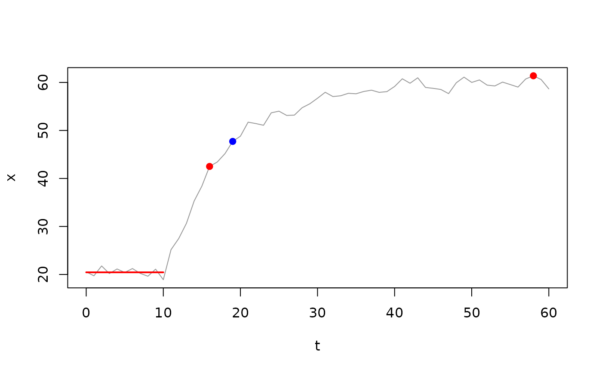

Estimate the time at which a numeric vector reaches a specified fraction
of its total response amplitude relative to a baseline, e.g.
half-response time at response_fraction = 0.5. Vector-level companion
to analyse_kinetics() with method = "response_time".
Arguments
- x
A numeric vector of the response variable.
- t
An optional numeric vector of the predictor variable (e.g. time). Default is
seq_along(x).- start_time
A numeric value in units of
tspecifying the response onset. Samples wheret <= start_timedefine the baseline window. Default is0.- response_fraction
A numeric vector in the range
[0, 1]specifying the fractional response amplitude(s) to detect. Defaults to0.5(50% response, i.e. half-response time). Multiple values (e.g.c(0.5, 0.632)) return one element per fraction.- direction
A character string specifying the response direction
"positive", or"negative", or detect with"auto"(default). See Details.- verbose
Logical.
TRUE(default) will display, andFALSEwill silence warnings and information messages helpful for troubleshooting. Global default can be set viaoptions(mnirs.verbose = FALSE).- ...
Additional arguments.
Value
A named list containing:
AThe mean baseline value of
xwheret <= start_time.BThe extreme (maximum or minimum) value of
xafterstart_time.response_timeThe elapsed time from
start_timeto the fractional response, in units oft; one element perresponse_fraction.response_valueThe observed value of
xat the response index; one element perresponse_fraction.fittedThe target fractional response value
A + (B - A) * response_fraction; one element perresponse_fraction.baseline_idxInteger indices where
t <= start_time.response_idxInteger index at each
response_value.extreme_idxInteger index at the extreme value
B.
Details
A non-parametric approach (estimated directly from the observed data without
assuming a specific mathematical shape). response_fraction = 0.5
approximates the inflection point (xmid) of a symmetric sigmoid function.
response_fraction = 0.632 approximates the time constant (tau;
\(\tau\)) of a monoexponential function, or xmid of a left-Gompertz
function. response_fraction = 0.368 approximates xmid of a
right-Gompertz function. This is a good fallback estimation method if
parametric methods are not successfully fit.
Method
The target response value is: fitted = A + (B - A) * response_fraction
Where A is the mean baseline value (t <= start_time) and B is the
extreme (peak or trough) value after start_time. response_value is the
first observed sample equal to or greater/lesser than the target fitted
value (above for "positive", below for "negative" direction).
response_time is the elapsed time from start_time to response_value.
analyse_kinetics() first trims x to end_window past the first extreme,
so B there is the first local extreme with no greater/lesser values
within end_window. Called directly, B is the global extreme of x
after start_time.
Direction
direction is detected automatically by default as either "positive"
(upward) or "negative" (downward) response, from the dominant excursion
of x above or below its initial baseline (the median of the earliest
samples). When tied, the greater absolute extreme decides. B is the
maximum for "positive" or the minimum for "negative", and can be
overwritten manually.
Examples
## create an exponential curve with random noise
set.seed(13)
t <- 0:60
x <- monoexponential(t, A = 20, B = 60, tau = 8, TD = 10) +
rnorm(length(t), 0, 1)
## half-response time (0.5) and time constant approximation (0.632 ~= tau)
RT <- response_time(x, t, start_time = 10, response_fraction = c(0.5, 0.632))
RT$response_time
#> [1] 6 9
plot(t, x, type = "l", col = "grey60", xlab = "t", ylab = "x")
## mean baseline `A` across the baseline window
segments(
t[min(RT$baseline_idx)], RT$A,
t[max(RT$baseline_idx)], RT$A,
col = "red", lwd = 2
)
## response values at 0.5 (red) and 0.632 (blue), and the extreme `B`
points(
t[RT$response_idx],
RT$response_value,
col = c("red", "blue"),
pch = 19
)
points(t[RT$extreme_idx], RT$B, col = "red", pch = 19)
